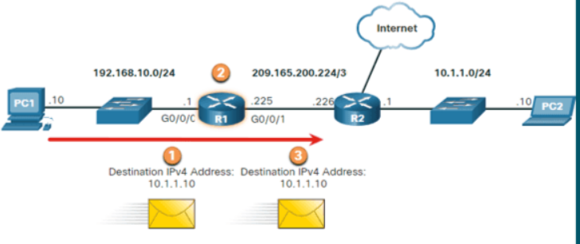
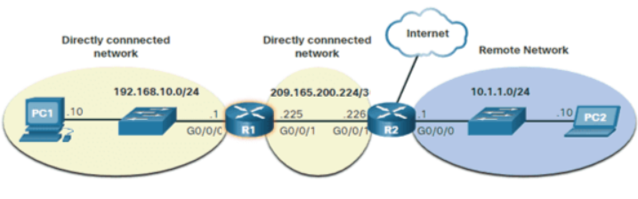
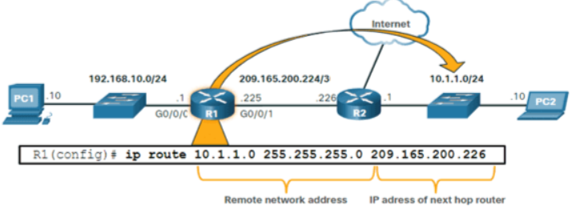
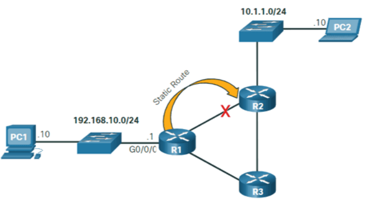
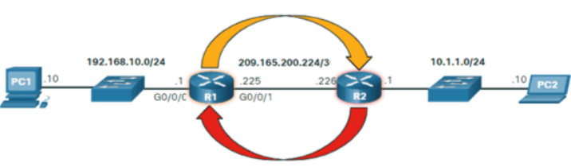

Routing/Enrutamiento
Enrutamiento
El enrutamiento es el proceso mediante el cual los datos se dirigen de manera eficiente desde un origen a un destino a través de una red de dispositivos interconectados. En un sistema de red, los enrutadores son los dispositivos clave que se encargan de tomar decisiones de enrutamiento y determinar la mejor ruta para enviar los paquetes de datos.
Introducción al Routing/Enrutamiento
Decisión de Reenvío de Paquetes de Router
En el tema anterior se discutieron las tablas de enrutamiento de host. La mayoría de las redes también contienen routers, que son dispositivos intermediarios. Los routers también contienen tablas de enrutamiento. En este tema se tratan las operaciones del router en la capa de red. Cuando un host envía un paquete a otro host, consulta su tabla de enrutamiento para determinar dónde enviar el paquete. Si el host de destino está en una red remota, el paquete se reenvía a la puerta de enlace predeterminada, que generalmente es el router local.
¿Qué sucede cuando llega un paquete a la interfaz de un Router?
El Router examina la dirección IP de destino del paquete y busca en su tabla de enrutamiento para determinar dónde reenviar el paquete. La tabla de enrutamiento contiene una lista de todas las direcciones de red conocidas (prefijos) y dónde reenviar el paquete. Estas entradas se conocen como entradas de ruta o routes. El Router reenviará el paquete utilizando la mejor (más larga) entrada de ruta coincidente.
- El paquete llega a la interfaz Gigabit Ethernet 0/0/0 del Router R1. R1 desencapsula el encabezado y el tráiler de Ethernet de capa 2.
- El Router R1 examina la dirección IPv4 de destino del paquete y busca la mejor coincidencia en su tabla de enrutamiento IPv4. La entrada de ruta indica que este paquete debe reenviarse al Router R2.
- El Router R1 encapsula el paquete en un nuevo encabezado y tráiler de Ethernet, y reenvía el paquete al Router de salto R2 siguiente.
Tabla de Enrutamiento de Router IP
La tabla de enrutamiento del Router contiene entradas de ruta de red que enumeran todos los posibles destinos de red conocidos.
- Redes conectadas directamente: estas entradas de ruta de red son interfaces de Router activas. Los routers agregan una ruta conectada directamente cuando una interfaz se configura con una dirección IP y se activa. Cada interfaz de Router está conectada a un segmento de red diferente. En la imagen, las redes conectadas directamente en la tabla de enrutamiento R1 IPv4 serían 192.168.10.0/24 y 209.165.200.224/30.
- Redes remotas: estas entradas de ruta de red están conectadas a otros routers. Los routers aprenden sobre redes remotas, ya sea mediante la configuración explícita de un administrador o mediante el intercambio de información de ruta mediante un protocolo de enrutamiento dinámico. En la imagen, la red remota en la tabla de enrutamiento R1 IPv4 sería 10.1.1.0/24.
- Ruta predeterminada: al igual que un host, la mayoría de los routers también incluyen una entrada de ruta predeterminada, una puerta de enlace de último recurso. La ruta predeterminada se usa cuando no hay una mejor (más larga) coincidencia en la tabla de enrutamiento IP. En la imagen, la tabla de enrutamiento R1 IPv4 probablemente incluiría una ruta predeterminada para reenviar todos los paquetes al Router R2.
La imagen identifica las redes directamente conectadas y remotas del Router R1.
R1 tiene dos redes conectadas directamente:
- 192.168.10.0/24
- 209.165.200.224/30
R1 también tiene redes remotas (es decir, 10.1.1.0/24 e Internet) sobre las que puede aprender.
Un Router puede aprender sobre redes remotas de una de dos maneras:
- Manualmente: las redes remotas se ingresan manualmente en la tabla de rutas mediante rutas estáticas.
- Dinámicamente: las rutas remotas se aprenden automáticamente mediante un protocolo de enrutamiento dinámico.
Enrutamiento Estático
Las rutas estáticas son entradas de ruta que se configuran manualmente. La imagen muestra un ejemplo de una ruta estática que se configuró manualmente en el Router R1. La ruta estática incluye la dirección de red remota y la dirección IP del Router del siguiente salto.
- R1 se configura manualmente con una ruta estática para llegar a la red 10.1.1.0/24. Si esta ruta cambia, R1 requerirá una nueva ruta estática.
Si hay un cambio en la topología de la red, la ruta estática no se actualiza automáticamente y debe reconfigurarse manualmente. Por ejemplo, en la imagen R1 tiene una ruta estática para llegar a la red 10.1.1.0/24 a través de R2. Si esa ruta ya no está disponible, R1 debería reconfigurarse con una nueva ruta estática a la red 10.1.1.0/24 a través de R3. Por lo tanto, el Router R3 necesitaría tener una entrada de ruta en su tabla de enrutamiento para enviar paquetes destinados a 10.1.1.0/24 a R2.
- Si la ruta desde R1 a través de R2 ya no está disponible, sería necesario configurar una nueva ruta estática a través de R3. Una ruta estática no se ajusta automáticamente a los cambios de topología.
El enrutamiento estático tiene las siguientes características:
- Una ruta estática debe configurarse manualmente.
- El administrador debe reconfigurar una ruta estática si hay un cambio en la topología y la ruta estática ya no es viable.
- Una ruta estática es apropiada para una red pequeña y cuando hay pocos enlaces redundantes o ninguno.
- Una ruta estática se usa comúnmente con un protocolo de enrutamiento dinámico para configurar una ruta predeterminada
Enrutamiento Dinámico
Un protocolo de enrutamiento dinámico permite a los routers aprender automáticamente sobre redes remotas, incluida una ruta predeterminada, de otros routers. Los routers que utilizan protocolos de enrutamiento dinámico comparten automáticamente la información de enrutamiento con otros routers y compensan los cambios de topología sin involucrar al administrador de la red. Si hay un cambio en la topología de la red, los routers comparten esta información utilizando el protocolo de enrutamiento dinámico y actualizan automáticamente sus tablas de enrutamiento.
Los protocolos de enrutamiento dinámico incluyen OSPF y el Enhanced Interior Gateway Routing Protocol (EIGRP). La imagen muestra un ejemplo de routers R1 y R2 que comparten automáticamente información de red utilizando el protocolo de enrutamiento OSPF.
- R1 está utilizando el protocolo de enrutamiento OSPF para informar a R2 sobre la red 192.168.10.0/24.
- R2 está utilizando el protocolo de enrutamiento OSPF para informar a R1 sobre la red 10.1.1.0/24.
La configuración básica solo requiere que el administrador de red habilite las redes conectadas directamente dentro del protocolo de enrutamiento dinámico. El protocolo de enrutamiento dinámico hará automáticamente lo siguiente:
- Descubre redes remotas
- Mantener información de enrutamiento actualizada
- Elija el mejor camino hacia las redes de destino
- Intente encontrar una nueva mejor ruta si la ruta actual ya no está disponible.
Cuando un Router se configura manualmente con una ruta estática o aprende sobre una red remota de forma dinámica mediante un protocolo de enrutamiento dinámico, la dirección de red remota y la dirección del siguiente salto se ingresan en la tabla de enrutamiento IP. Como se muestra en la imagen, si hay un cambio en la topología de la red, los routers se ajustarán automáticamente e intentarán encontrar una nueva mejor ruta.